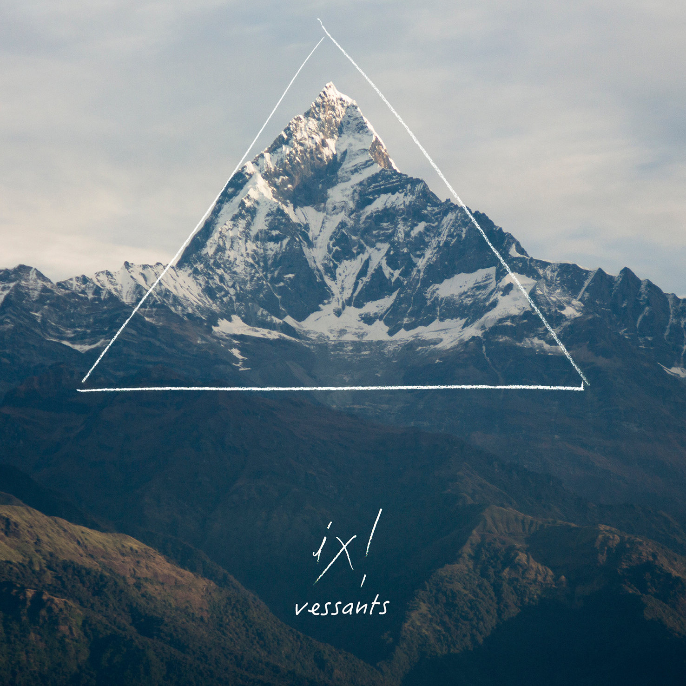

El teu pitjor malson
El teu pitjor malson
IX!
No es tracta d'un esforç per entendre
No és pas que tu no entenguis res d'això
Ni tan sols és que vulguis o no
És que no et deixen, és que tu saps que no pots
Això va com va
Mirades de senyors de pedra, trobades de mentiders assassins, encaixen amb corbata lletja, encobridors de tot el que es belluga aquí
Ja surt la teva nina de plàstic, a veure què ens explica avui, que posa cara de fàstic, saps molt bé com sou els teus
Som, hem fet el teu pitjor malson
som, serem el teu pitjor destorb
Ara qui mourà la següent peça?
Veurem si podeu frenar-nos a tots
Pregunta-ho a qui ja no hi és, pregunta-ho al de dalt de tot
I surt el teu equip de serps enverinant amb un estat de por, parlant de democràcia, llibertat i protecció
Però més enllà, les forces humanes faran com l'aigua que troba el camí, traspassa qualsevol mur, no hi ha res que ho pugui aturar
Som, hem fet el teu pitjor malson
Som, serem el teu pitjor destorb
Foto i lletres de Viasona.cat